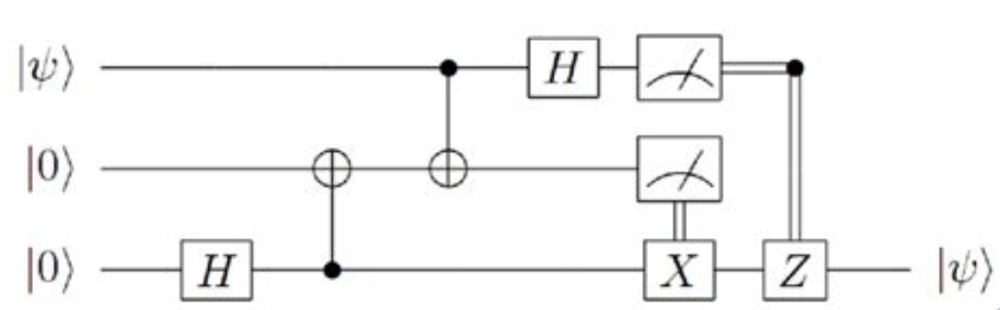

Scientists write fiction
Session 1 for QCQI Workshop 2023
Dhruva Sambrani
Feb 18, 2023
The world as a calculator
What is Physics
- States
- Dynamics
- Measurements
What is Computation
- Data
- Functions
- Output
They are the same things
Studying one of these is intrinsically related to studying the
other.
Maths for Quantum Computation
Classical Mechanics - Real numbers
- Single particle
- Real numbers - \(x\)
- Hamiltonian/Lagrangian/Newtonain Dynamics - \(x^\prime = F(x)\)
- Observe with a meter - \(M(x)\)
- Multiple objects, repeat numbers
Classical Mechanics - Probability Distributions
- Ensembles
- Probability vectors - \(p=\mathbb{R}^n, \sum_{i=1}^{n}p_i = 1\)
- Vector space over convex combinations over real
numbers
- Inner product gives overlap
- Column stochastic matrices - \(T = n \times n\) square matrix, \(\sum_{j=1}^{n}T_{i,j} = 1, p^\prime =
Tp\)
- Observe the system with a meter - \(\bar{M}(p)\)
Quantum Mechanics - Complex numbers
Single particle
Complex numbers as probability amplitudes -
\(|\psi\rangle=\mathbb{C}^n, \sum_{j=1}^{n}
|c_i|^2 = 1\)
- Vector space over convex combinations over complex
numbers
- Inner product gives overlap
Unitary matrices - \(U
= n \times n\) square matrix, \(U^\dagger U = I_n = UU^\dagger\)
- \(|\psi^\dagger\rangle\) = \(U |\psi\rangle\)
Measurements
- Let \(P_m\) =
\(|m \rangle\langle m|\)
- \(p(m) = \langle \psi |
P_m | \psi \rangle\)
Multiple particles, tensor product
- \(|\psi_1\rangle \otimes
|\psi_2\rangle\)
- \(U_1 \otimes
U_2\)
- \(p(m) = \langle \psi |
P_m | \psi \rangle\)
2 Level systems
\[\cos(\theta) |0\rangle + \sin(\theta)
e^{i\phi} |1\rangle\]
- Points on a sphere
- Unitaries are rotations
- \(S_z\), \(S_x\), \(S_y\)
- \(H\), \(T\)
- CNOT
Circuit Diagrams

- Serial Composition
- Parallel Composition
- Circuit Depth
Quantum Computers
Quantum Computers are good at simulating unitaries.
The game is to build the correct unitary.
Grover Search
- Oracle
- Diffusion